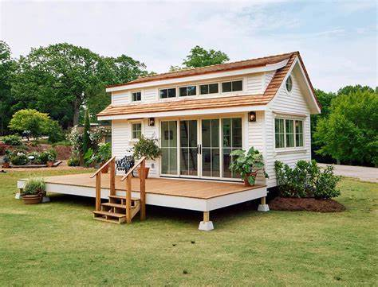

A beam is a structural element that primarily resists loads applied laterally across the beam's axis (an element designed to carry a load pushing Parralell to its axis would be a strut or column). Its mode of deflection is primarily by bending, as loads produce reaction forces at the beam's support points and internal bending moments, shear, stresses, strains, and deflections.
1- Simply supported beam simply supported beam is supported at both ends. ... 2- Continuous beam This beam is similar to a simply supported beam except more than two support are used on it. ... 3- Overhanging beam The overhanging beam is a combination of a simply supported beam and a cantilever beam. ... 4- Cantilever beam ... 5- Fixed-beam ...